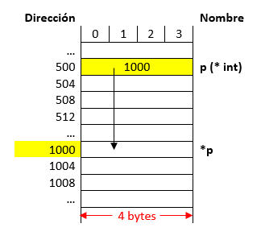
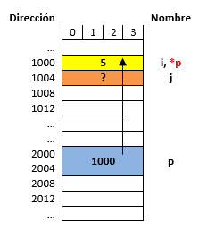
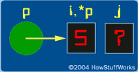

Apuntadores y arreglos
Contents
Apuntadores y arreglos#
Objetivos
Conocer y utilizar los apuntadores para el uso eficiente de la memoria.
Presentar el uso de las funciones y establecer cómo se realiza el paso de parámetros a funciones.
Conocer y aplicar el concepto de arreglos de una y más dimensiones en la resolución de problemas mediante algoritmos.
Conocer cómo es posible asignar de forma eficiente espacio en memoria.
1. Conceptos previos - ¿Que sucede cuando se declara una variable?#
Cuando una variable se declara esta pasa a ocupar un lugar de memoria cuyo tamaño dependerá del número de bytes asociados al tipo de dato con el cual esta se declara. Suponiendo que se tienen las siguientes instrucciones en C:
int i;
i = 35;
La siguiente figura ilustra su representación en memoria:

Fig. 1 Representación de una variable en memoria.#
Desde el punto de vista del mapa de memoria y suponiendo que una variable tipo int ocupa 4 bytes tenemos el siguiente resultado por instrucción:
Instrucción |
Representación en memoria |
|---|---|
|
|
|

Como se puede ver en la figura anterior, lo que se modifica cuando se hace manipulación sobre variables es el contenido almacenado en un lugar especifico de memoria. Entender esto es de vital importancia para manejar el próximo tema.
2. Entrando en materia - Algunos aspectos sobre los apuntadores#
2.1. ¿Que es un apuntador?#
Un apuntador es una variable que almacena una dirección de memoria y no un valor como ocurre en el caso de las variables normales. La siguiente tabla resalta este hecho:
Instrucciones |
Mapa de memoria |
|---|---|
|
 |
|
|

Como se puede notar en la figura anterior, cuando el valor almacenado en el apuntador hará referencia a la dirección 1000 y no al valor de 1000, esto nos permitirá acceder a dicho lugar de memoria desde el apuntador. Más tarde veremos cómo. Así mismo, como un apuntador guarda una dirección de memoria y teniendo en cuenta que para el ejemplo se supone una arquitectura en la cual se manejan 32 bits ( equivalentes a 4 bytes), esto hará que una variable tipo apuntador sin importar el tipo de dato al que apunte tenga un tamaño de 4 bytes. (Este tamaño se define por la arquitectura. Por ejemplo si la maquina es de 64 bits entonces el tamaño ocupado por una variable tipo apuntador será de 8 bytes).
2.2. ¿Como se declara un apuntador?#
Un apuntador se declara de la siguiente manera (donde las cosas que se encuentran entre corchetes son opcionales):
tipo *[modificadores_del_tipo] nombre [=valor inicial];
Dónde:
Tipo: Tipo de dato al cual se desea apuntar, puede ser un tipo de dato simple (
char,int, etc.) o un tipo de dato complejo como una estructura).Modificadores del tipo: Puede contener cualquier combinación de los modificadores de tipo
const,volatileyrestrict.Nombre: Nombre del apuntador.
Valor inicial: Valor inicial del apuntador.
La siguiente figura muestra esto lo anterior en términos del mapa de memoria:
Instrucciones |
Mapa de memoria |
|---|---|
|
|

Como se puede notar en la figura anterior, lo que se guarda en el apuntador es la dirección base (dirección del byte de menor peso) de la variable a la cual se apunta. Para el caso anterior, la variable i ocupa 2 bytes (103 y 104) sin embargo, en el apuntador se almacena la parte menos correspondiente al byte pesado (byte 103).
Si observa la segunda instrucción anteriormente mostrada, la forma como se obtuvo la dirección de i fue por medio del operador dirección (&) antepuesto a la variable. La siguiente tabla se llena con base en la figura anterior:
Expresión |
Significado |
Valor |
|---|---|---|
|
Contenido de |
|
|
Dirección de |
|
|
Contenido del apuntador |
|
|
Dirección del apuntador |
|
Note en la tabla anterior y la figura previa que con & lo que se obtiene es dirección base de una variable no importa su tipo ya sea una variable normal (char, int, float, etc), apuntador u otro. A continuación se muestra una forma simplificada (tomada de la sección Pointers basics de How Stuff Works) para visualizar los apuntadores y las variables comunes de manera gráfica sin tener que recurrir al bosquejo del mapa de memoria previamente realizado.

Fig. 2 Vista simplificada con variables y apuntadores.#
Note la diferencia en la gráfica, en el dibujo el circulo representa una variable tipo apuntador y como tal almacena una dirección de memoria, la de i para el caso (103); por otro lado el vinculo entre el apuntador y la variable se representa por medio de la flecha. Finalmente, el contenido de la variable puede ser accedido o manipulado desde el símbolo i, o desde al desreferenciar el apuntador (usando *ptr), pero este sera un tema a tratar después.
Una forma aun mas simplificada e incluso mas conveniente al momento de hacer pruebas de escritorio se muestra a continuación. En esta solo se resalta el vinculo del apuntador con la variable:
Fig. 3 Vista aun mas simplificada con variables y apuntadores.#
2.3. Manipulación de memoria mediante apuntadores#
Una de las aplicaciones más importantes es el acceso directo a memoria para su manipulación. Para ello, se manejan dos operadores importantes los cuales el operador referencia (&) y el operador des-referencia (*).
2.3.1. Referenciar un apuntador#
Consiste en asociar el apuntador a una dirección específica (durante la declaración o después de esta), para esto se suele usar el operador & para obtener la dirección de la variable en cuestión. A continuación se muestra la forma como normalmente se hace esto:
apuntador = &variable;
También es posible referenciar un apuntador pasándole el valor que se tiene en otro apuntador. Note que no se hizo uso del operador & en este caso:
apuntador = &variable;
Todo apuntador debe inicializarse antes de usarse. Si esto no se hace, cuando intente usarlo para hacer alguna operación en memoria el programa sacara un error. Un puntero que no ha sido inicializado se conoce como Wild pointer.
2.3.2. Des-referenciar un apuntador#
Para poder acceder al lugar de memoria que está siendo apuntado por el puntero y realizar operaciones de lectura y escritura sobre esta dirección de memoria se debe des-referenciar el apuntador. Para ello se hace uso del operador des-referencia (*) después de la declaración del apuntador. El contenido del lugar de memoria apuntado (lectura) se obtiene de la siguiente manera:
variable = *apuntador;
Ahora si lo que se desea hacer es escribir en el lugar de memoria apuntado se hace lo siguiente:
*apuntador = variable;
2.3.3. Ejemplos#
Suponga que se tiene el siguiente fragmento de código fuente:
#include <stdio.h> int main() { int i,j; int *p; //Apuntador a un entero p = &i; *p = 5; return 0; }
También tenga en cuenta lo siguientes enunciados:
Suponga que
iyjson de4bytes y ocupan las direcciones base1000y1004.El apuntador
pocupa las direccione base2000.Así mismo la arquitectura es de
64bits por lo que el espacio ocupado por el apuntador sera de8bytes.
Muestre la ejecución paso a paso del código anterior resaltando la evolución en memoria.
Solución: Las instrucciones que se están evaluando en un momento dado se resaltan en la siguiente tabla:
Instrucciones ejecutadas
Contenido del mapa de memoria
Visualización al estilo HowStuffWorks
int i,j;
int *p; //Apuntador a un entero
p = &i;
*p = 5;

int i,j;
int *p; //Apuntador a un entero
p = &i;
*p = 5;

int i,j;int *p; //Apuntador a un entero
p = &i;
*p = 5;

Note que en la última instrucción resaltada el cambio del contenido de la sección de memoria asociado a la variable
ino se realizó desde esta (i = 5) sino desde el apuntadorp(*p = 5) el cual previamente se puso a apuntar a dicho lugar de memoria (p = &i).A continuación se muestra otro ejemplo en el cual se resalta que es posible que varios apuntadores estén apuntando a un mismo lugar de memoria. Tenga en cuenta lo siguientes enunciados:
Suponga que
iyjson de4bytes y ocupan las direcciones base1000y1008.Los apuntadores
p,qyrocupan las direcciones base2000,3000y4000.Así mismo la arquitectura es de
32bits por lo que el espacio ocupado por el apuntador será de4bytes.
El codigo asociado se muestra a continuación:
#include <stdio.h> int main() { int i; int *p,*q,*r; p = &i; q = &i; r = p; return 0; }
Solución: la siguiente tabla muestra con detalle los resultados:
Instrucciones ejecutadas
Contenido del mapa de memoria
Visualización al estilo HowStuffWorks
int i = 5;
int *p,*q,*r;
p = &i;
q = &i;
r = p;
Solución: Las instrucciones que se están evaluando en un momento dado se resaltan en la siguiente tabla 1.